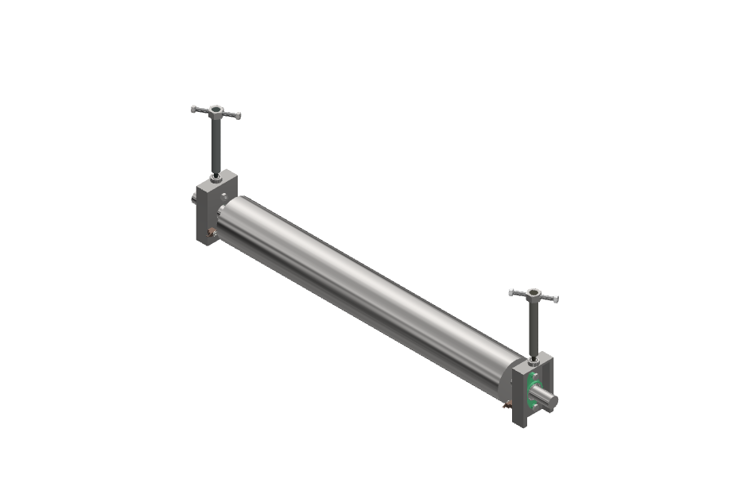
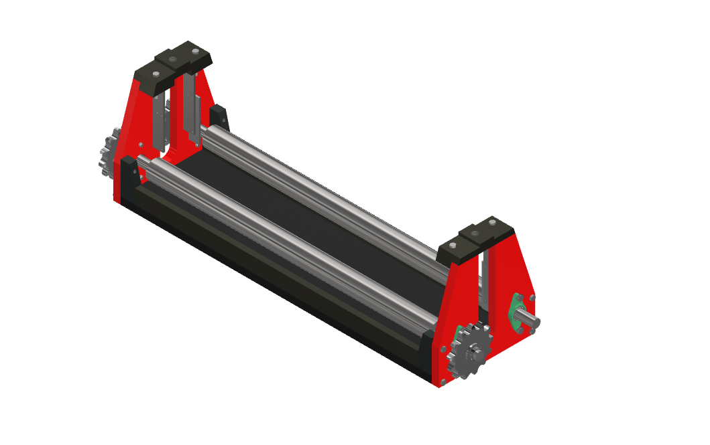

Funcionamiento de la máquina
La máquina opera aplicando presión progresiva sobre la lámina metálica mediante un rodillo superior central, el cual trabaja en conjunto con dos rodillos inferiores de apoyo para deformar el material y darle la curvatura deseada. Capacidad de curva: Permite lograr diámetros mínimos de curvatura de 120 mm, adaptándose a una amplia variedad de aplicaciones e industrias.
Modos de configuración
Rolado Uniforme: Los rodillos se mantienen paralelos para conformar cilindros perfectos. Rolado Cónico: Se ajusta un extremo a mayor altura que el otro para crear piezas cónicas o reducciones.

Sub Ensamble 1
Es la base rígida del equipo, diseñada para sostener y alinear con precisión todos los componentes bajo carga. Función clave: Aloja los dos rodillos inferiores fijos, los cuales sirven de guía y punto de apoyo. Beneficio: Garantiza un conformado progresivo y suave del metal, evitando marcas no deseadas, golpes bruscos o deformaciones en la lámina..

Sub Ensamble 2
Es el mecanismo principal encargado de generar y regular la deformación sobre el metal. Mecanismo de presión: Un tornillo de avance gradual baja el rodillo superior principal, permitiendo un control milimétrico sobre la fuerza aplicada. Punto Cero: Cuenta con un tope físico de seguridad que marca el límite máximo de descenso. Este punto cero garantiza la precisión en el radio final y previene sobrecargas mecánicas en la estructura.
Ambos cumplen con una función en común, por eso tanto su diseño como sus materiales son muy importantes para su funcionamiento.